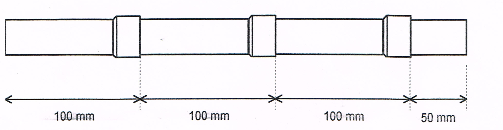

Mise en situation — pas un nouvel ordre d'intervention, un point d'étape
Le chantier de l'arrière-boutique commence dans les prochains modules de S5 : brasage fort, azote,
armoire électrique industrielle. On change d'échelle par rapport au pavillon de S3-S4. Mais avant de
repartir, le professeur vous rend votre grille d'évaluation É2 (semaine 13). C'est normal de ne pas
être à 4 partout : É2 mesurait où vous en étiez, pas votre valeur. Aujourd'hui, vous allez lire votre
grille, repérer ce qui doit être repris, puis vous entraîner à nouveau sur les points précis qui
coincent encore — un peu comme un frigoriste qui reprend un geste raté avant de passer au chantier suivant,
plutôt que d'avancer avec un geste bancal.
Tâche
T12 Respecter les consignes de sécurité et protéger la zone de travail seule tâche mobilisée aujourd'hui — aucune tâche nouvelle
Savoirs réactivés
S6.2 Principaux risques et moyens de prévention S2.2 Lecture de plan S5.1 Systèmes thermodynamiques à détente directe déjà vus en S3-S4, rien de nouveau
Savoir-être
Honnêteté de mon auto-positionnement · j'accepte un point faible sans me décourager · si je suis tuteur/tutrice, j'aide sans jamais faire à la place ni me moquer
Compétences (≤ 4)
Confortement — formatif, non remontéC3.4 Façonner, raccorder, assembler, isoler les circuits (frigorifique, hydraulique, aéraulique) sur T10 · S2.1 Confortement — formatif, non remontéC3.6 Câbler, repérer, connecter les liaisons électriques et électroniques sur T10 · S2.2 Confortement — formatif, non remontéC4.5 Mesurer, comparer des grandeurs sur T11 · S5.1
⚠ Ce que ce module N'EST PAS — Ce n'est pas une nouvelle évaluation.
Rien de ce que vous ferez aujourd'hui n'est noté ni remonté sur École Directe. C'est un entraînement,
comme on refait un geste raté à l'entraînement avant le prochain match. Votre grille d'aujourd'hui reste entre
vous et votre carnet F3.
Objectifs — je serai capable de…
lire ma grille d'évaluation É2 et identifier mes cases 1 et 2 (mes points à reprendre) ;
m'entraîner à nouveau, en petit groupe, sur le ou les gestes précis qui coincent encore (brasage
tendre, câblage ou lecture P/T, selon ce que le professeur m'indique) ;
si je suis positionné(e) 3 ou 4 sur une compétence, aider un camarade sans jamais faire le geste à
sa place ;
formuler 2 objectifs de progrès personnels, clairs, pour la suite de la séquence S5 — utiles dès
le brasage fort et l'armoire industrielle qui arrivent.
Comment se déroule cette séance
Vous ne passez que sur le ou les postes qui correspondent à vos résultats É2,
indiqués par le professeur. Il y a 3 postes de reprise : BRASAGE TENDRE (une emboîture brasée, cotes
contrôlées), CÂBLAGE (le télérupteur recâblé), P/T-MESURES (lecture réglette P/T + relevés). Si
vous êtes à 3 ou 4 sur une compétence, vous devenez tuteur/tutrice sur le poste correspondant, ou vous
répondez au défi transfert : « et sur l'armoire industrielle qui arrive ? ».
Le professeur vous rend votre grille É2 corrigée. Pour chaque compétence, recopiez
votre vrai niveau (celui écrit sur votre grille É2, pas ce que vous pensez mériter) dans la case
réel ci-dessous, en entourant le bon chiffre. Les 5 colonnes rappellent ce que
veut dire chaque niveau — c'est le texte exact de votre grille É2.
Compétence
0
1
2
3
4
C3.4 Façonner, raccorder, assembler, isoler les circuits (frigorifique, hydraulique, aéraulique) sur T10 · S2.1
Emboîtures et brasage conformes avec l'aide du professeur.
Réalise seul(e) les emboîtures cotées (± 2 mm) ET des cordons conformes.
Comme « Acquis », et repère seul(e) un défaut avant de présenter la pièce.
C3.6 Câbler, repérer, connecter les liaisons électriques et électroniques sur T10 · S2.2
Compétence non observée ce jour.
Câblage non conforme, consignation non respectée, ou DDR/disjoncteur non repérés.
Câblage fonctionnel avec l'aide du professeur ; repérage DDR/disjoncteur réalisé avec aide.
Câble seul(e), conforme, repère seul(e) le DDR et le disjoncteur, contrôle hors tension avant appel.
Comme « Acquis », et explique pourquoi un DDR est nécessaire en plus du disjoncteur.
C4.5 Mesurer, comparer des grandeurs sur T11 · S5.1
Compétence non observée ce jour.
Ne sait pas lire un couple pression/température sur la réglette fournie, même avec aide.
Lit un couple avec l'aide du professeur.
Lit seul(e) les couples demandés, explique le sens de variation et le lien évaporateur/condenseur.
Comme « Acquis », et relie spontanément la lecture au rallye de S4-F1.
Savoir-être — sécurité, rigueur, honnêteté de la mesure
Non observé ce jour.
EPI incomplets, geste dangereux, ou valeur inventée/recopiée : niveau 1 automatique.
Sécurité globalement respectée, quelques rappels nécessaires.
Sécurité et rigueur respectées sans rappel, mesures et lectures honnêtes.
Comme « Acquis », et reste rigoureux(se) jusqu'au rangement complet des postes.
Mon positionnement réel (recopié depuis ma grille É2)
C3.4 : 01234
C3.6 : 01234
C4.5 : 01234
Entourez maintenant, au feutre rouge, chaque case
1 ou 2 que vous venez de reporter ci-dessus. Ce sont vos points de reprise pour aujourd'hui — c'est exactement
ce que vous allez retravailler sur les postes.
Ce que je retiens
Un 1 ou un 2 aujourd'hui ne veut pas dire « je suis nul(le) » : ça
veut dire « ce geste précis n'était pas encore assez sûr le jour de l'évaluation ». C'est exactement pour ça
qu'existe ce module : reprendre le geste, calmement, en petit groupe, sans note à la clé — avant de changer
d'échelle avec le brasage fort et l'armoire industrielle.
POSTE BRASAGE TENDRE — reprise C3.4 — ≈ 35 min — sur indication du professeur uniquement
Refaire une emboîture, la braser, et contrôler le cordon
Vous retrouvez exactement le geste travaillé en S3-F2 : décaper, réaliser une
emboîture à la cote demandée, braser au métal d'apport tendre, contrôler le cordon. Aujourd'hui, on ne reprend
qu'une seule emboîture (pas les trois de l'exercice du client) : le but est de sécuriser le geste, pas de
refaire toute la pièce.

Photo de l'exercice source (S3-F2) — le geste que vous reprenez aujourd'hui, réduit à une seule emboîture.
Rappel sécurité — ne change jamais — Gants anti-chaleur et lunettes de
protection, comme en S3-F2. Le tube reste chaud longtemps après le brasage : on ne le touche jamais à
main nue. Poste dégagé de tout inflammable, extincteur localisé.
Ce qui est demandé
☐ 1. Tracer la cote demandée par le professeur, avec sa tolérance (± 2 mm, comme en S3-F2)
☐ 2. Décaper la zone à l'emboîture (toile abrasive) : surface propre indispensable au brasage capillaire
☐ 3. Réaliser l'emboîture à l'outil d'expansion, à la cote tracée
☐ 4. Montrer l'emboîture au professeur AVANT tout brasage — obligation non négociable, identique à S3-F2
☐ 5. Braser : chauffe uniforme du raccord, avancée du métal d'apport par capillarité, retrait de la flamme dès le cordon complet
☐ 6. Contrôler visuellement le cordon : continu, brillant, sans manque, sans surchauffe
Tableau de relevé — auto-contrôle avant l'appel du professeur
Cote demandée (mm)
Cote obtenue (mm)
Décapage fait ?
Cordon conforme ?
Surchauffe visible ?
________
________
☐ Oui ☐ Non
☐ Oui ☐ Non
☐ Oui ☐ Non
Question — Aujourd'hui, qu'est-ce qui a changé dans votre geste par rapport
au jour de l'évaluation É2 ? (Plus posé, plus rapide, mieux compris…)
Je sors de cette reprise quand…
…mon emboîture est conforme à la cote, mon cordon est continu,
brillant, sans manque, sans surchauffe, réalisé seul(e), sans que le professeur reprenne le geste à
ma place.
Visa professeur (sortie de reprise) : ________________
POSTE CÂBLAGE — reprise C3.6 — ≈ 35 min — sur indication du professeur uniquement
Recâbler le télérupteur d'É2, sans aide
La platine est déjà implantée par le professeur (disjoncteur, boutons
poussoirs, télérupteur et lampe déjà fixés) : aujourd'hui, on reprend seulement le geste du câblage, à
partir du schéma sans repères — à vous de retrouver Q2, S1/S2/S3, T1 et L1 comme vous l'avez appris en
S3-E2 et consolidé en S4-E1.
Rappel sécurité — ne change jamais — Disjoncteur du poste ouvert pendant tout
le câblage. Contrôle hors tension avant d'appeler le professeur. La mise sous tension reste, comme
toujours, un geste exclusivement professeur.
Ce qui est demandé
☐ 1. Repérer sur le tableau réel le DDR et le disjoncteur du départ concerné (comme en S3-E2)
☐ 2. Nommer sur le schéma les éléments retrouvés de mémoire (Q2, S1/S2/S3, T1, L1)
☐ 3. Raccorder les 3 boutons poussoirs en parallèle sur le circuit de commande (bobine du télérupteur) — jamais en série
☐ 4. Raccorder le contact du télérupteur sur le circuit de puissance, vers la lampe
☐ 5. Vérifier que chaque connexion est bien serrée et conforme aux couleurs normalisées (phase rouge/marron, neutre bleu, terre vert/jaune)
☐ 6. Réaliser le contrôle hors tension au multimètre (position ohmmètre)
Mesure
Bouton actionné
Valeur attendue
Valeur mesurée
Conforme ?
Continuité du circuit de commande
aucun
résistance infinie
________ Ω
☐ Oui ☐ Non
Continuité du circuit de commande
un bouton pressé
proche de 0 Ω
________ Ω
☐ Oui ☐ Non
Si une valeur ne correspond pas à celle attendue,
signalez-le vous-même : l'honnêteté du contrôle fait partie de la reprise, comme à É2. Une fois conforme,
appelez le professeur — lui seul ferme le disjoncteur pour vérifier que chaque bouton bascule bien la lampe.
Je sors de cette reprise quand…
…mon câblage est conforme au schéma et aux couleurs, les 3 boutons
sont raccordés en parallèle, mon contrôle hors tension est fait avant d'appeler le professeur, et
j'ai câblé seul(e), sans démonstration préalable.
Visa professeur (sortie de reprise) : ________________
POSTE P/T-MESURES — reprise C4.5 — ≈ 35 min — sur indication du professeur uniquement
Lire la réglette P/T, sur des relevés déjà pris
Ici, pas de manipulation sur machine : le professeur fournit des couples
pression relevés en S4-F1 (ou des couples équivalents). Vous vous concentrez uniquement sur le geste de
lecture : bonne colonne (fluide de la machine), bonne ligne (pression), bonne valeur en face — exactement
le geste travaillé pendant le rallye de S4-F1.
Rappel — Aucun fluide n'est manipulé aujourd'hui : on relit des valeurs déjà
prises, comme en S4-T2. La réglette P/T réelle utilisée est celle de l'atelier ; le fluide et les couples
pression/température exploités sont ceux fixés par le professeur, à faire valider.
1. Lecture de 2 couples pression/température (fournis par le professeur)
Station (rappel S4-F1)
Pression lue (bar)
Température lue sur la réglette (°C)
Fluide de la machine
BP
________
________
________
HP
________
________
________
2. Sens de variation
Question — Entre la station BP et la station HP, la température de
changement d'état suit-elle le même sens que la pression, ou le sens inverse ? Rédigez une phrase simple avec vos
propres mots (comme en S4-T1).
3. Lien évaporateur / condenseur
Question — Pourquoi la basse pression se trouve-t-elle côté évaporateur, et
la haute pression côté condenseur ? (rappel de S4-T1 : la pression choisit la température à laquelle un fluide
change d'état.)
Je sors de cette reprise quand…
…j'ai lu seul(e) les 2 couples demandés (bonne colonne, bonne
ligne), et j'ai expliqué avec mes mots le sens de variation et le lien évaporateur/condenseur.
Visa professeur (sortie de reprise) : ________________
…le professeur vous a positionné(e) 3 ou 4 sur au moins une des 3
compétences (C3.4, C3.6, C4.5). Sur le poste correspondant, vous devenez tuteur ou tutrice d'un camarade
en reprise. Si vous êtes 3-4 partout, le professeur peut aussi vous proposer le défi transfert
(approfondissement) ci-dessous plutôt qu'un tutorat.
Être tuteur, c'est un vrai rôle — pas juste « donner la réponse »
Un bon tuteur aide un camarade à réussir par lui-même. Ce n'est pas réussir
à sa place. C'est le même principe que le professeur applique avec vous depuis S1 : montrer, questionner,
laisser faire.
Quoi montrer
Le geste, lentement, une seule fois, en le nommant à voix haute pendant que vous le faites ;
où se trouve l'information utile (le schéma, la fiche de sécurité, le tableau de relevé) — pas la réponse
écrite dans la case ;
votre propre pièce ou montage déjà réalisé, comme exemple, jamais en le faisant sur celui du
camarade.
Quoi dire
« Qu'est-ce que tu observes ? » avant de donner une explication ;
« Relis ta consigne, qu'est-ce qui est demandé en premier ? » ;
« C'est presque ça, regarde cette partie précise » (pointer, pas corriger à sa place) ;
des encouragements sincères, sans exagération : « Là, c'est mieux qu'avant. »
Ce qu'un tuteur ne fait JAMAIS
Faire le geste à la place du camarade (tenir le chalumeau, câbler à sa place, brancher le
multimètre à sa place) ;
donner directement la réponse ou le résultat attendu (une valeur, un chiffre, une case cochée) ;
se moquer, soupirer, ou faire remarquer que « c'est facile » ;
comparer publiquement le camarade à d'autres élèves de la classe ;
prendre la place du professeur pour valider un contrôle de sécurité (mise sous tension, allumage du
chalumeau, contrôle final).
Défi transfert (approfondissement) — « et sur l'armoire industrielle qui arrive ? »
Si le professeur vous propose ce défi plutôt qu'un tutorat : les gestes
que vous venez de consolider (emboîture cotée, câblage sans aide, lecture P/T) sont ceux qu'exigera S5, mais à
une échelle plus grande — le brasage fort (S5-F1, tenue mécanique et température plus élevée) et
l'armoire électrique industrielle (S5-E1/E2, contacteur et moteur). Répondez par écrit : d'après ce que
vous savez déjà faire sur le pavillon, qu'est-ce qui va devoir changer quand la pièce à braser est plus
grosse, ou quand il faut câbler un départ moteur au lieu d'une simple lampe ?
Vous avez lu votre grille É2, entouré vos points faibles, puis repris un ou plusieurs
gestes en petit groupe. Pour finir, formulez 2 objectifs de progrès précis et réalistes, à partir de ce que
vous avez repéré aujourd'hui. Une phrase-guide vous aide à démarrer.
« D'ici la fin de la séquence S5, je m'entraîne à
______________________________________________________________________________
pour arriver à ______________________________________________________________ la prochaine fois. »
« D'ici la fin de la séquence S5, je m'entraîne à
______________________________________________________________________________
pour arriver à ______________________________________________________________ la prochaine fois. »
À faire avant de partir
Recopiez ces 2 objectifs dans votre carnet de bord F3,
rubrique « Après É2 ». Vous y reviendrez en bilan de séquence S5 (semaine 17) pour noter où vous en
êtes.
Pour finir — Sur une échelle de 0 à 4, comment vous sentez-vous
maintenant sur les points repris aujourd'hui, par rapport au jour d'É2 ?
Aujourd'hui : 01234
Rappel : ce module est entièrement formatif.
Aucune case de cette feuille, ni des postes de reprise, n'est remontée sur École Directe. Seul votre carnet F3
garde une trace de vos 2 objectifs.
D'après : évaluation É2 S3-S4 de
la même progression (F. Henninot, corrigé et grille, semaine 13) ; EXERCICE emboîture et brasage, T.P Assemblage
par brasure tendre du tube cuivre (F. Henninot, cotes et tolérance ± 2 mm reprises à l'identique) pour le poste
brasage tendre ; le-telerupteur.pdf + le-telerupteur-a-completer.pdf (Fiche Communication technique, Électricité
bâtiment, 02_CAP-IFCA/S4-Electricite, valeurs NF C 15-100 sourcées) pour le poste câblage ; documents S4-F1
(rallye de relevés P/T) et S4-T1 (relation pression/température) pour le poste P/T-mesures ; documents S3-F2,
S3-E2 et S4-E1 déjà produits pour cette même classe (reprise à l'identique des exercices, aucun exercice nouveau
créé) ; forme du document : S3-T2 (retour d'É1 et remédiation ciblée), même dispositif transposé à É2.